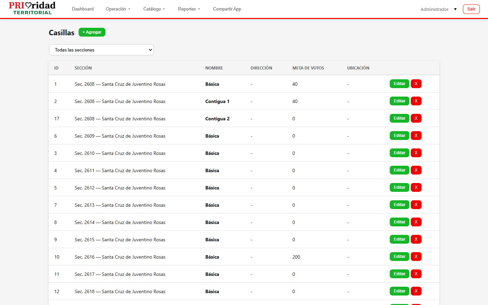

PRIoridad Territorial
Manual del Representante de Casilla
Gestión de casilla, listado electoral y reporte de incidencias
Versión 1.0 | Agosto 2026
Representante de Casilla El Representante gestiona su casilla asignada: visualiza el listado electoral, marca ciudadanos que ya votaron y reporta incidencias del proceso electoral.
1. Mi Casilla (Vista Principal)
Al iniciar sesión, la primera pantalla muestra la información de tu casilla asignada.
1.1 Ver mis casillas
1 Al iniciar sesión, verás la información de tu casilla.
2 Se muestra: número de casilla, sección, dirección del punto de votación.
3 Si tienes más de una casilla asignada, puedes alternar entre ellas.

2. Listado Electoral
Desde tu casilla puedes ver el listado completo de ciudadanos habilitados para votar en esa casilla.
2.1 Ver el listado
1 En la sección de casilla, toca "Ver listado" o navega a la pestaña de listado.
2 Se muestra la tabla con todos los ciudadanos de la casilla:
- Nombre completo
- Dirección
- Estatus (pendiente / ya votó)
2.2 Buscar ciudadano en el listado
1 Usa la barra de búsqueda para encontrar a un ciudadano por nombre.
3. Marcar "Ya Voto"
Cuando un ciudadano se presenta a votar, puedes marcarlo en el sistema:
1 Busca al ciudadano en el listado (por nombre o desplazándote).
2 Toca el botón o checkbox "Ya votó" al lado de su nombre.
3 El estatus del ciudadano cambiará de "Pendiente" a "Ya votó" (marcado en verde).
Conteo en tiempo real: A medida que marcas ciudadanos, el sistema actualiza automáticamente el conteo de participación de la casilla.
Importante: Una vez marcado "Ya votó", no se puede deshacer desde esta interfaz. Si marcas por error, contacta a tu coordinador.
4. Incidencias
Si detectas algún problema en tu casilla, puedes reportarlo:
1 Ve a Incidencias en el menú.
2 Toca "Nueva incidencia".
3 Selecciona el tipo de incidencia:
- Falla en equipamiento
- Falta de insumos
- Problemas de seguridad
- Afluencia excesiva
- Otro
4 Escribe una descripción detallada.
5 Agrega fotos de evidencia si es posible.
6 Toca "Guardar".
Las incidencias se envían en tiempo real al coordinador y administrador para que tomen acción.